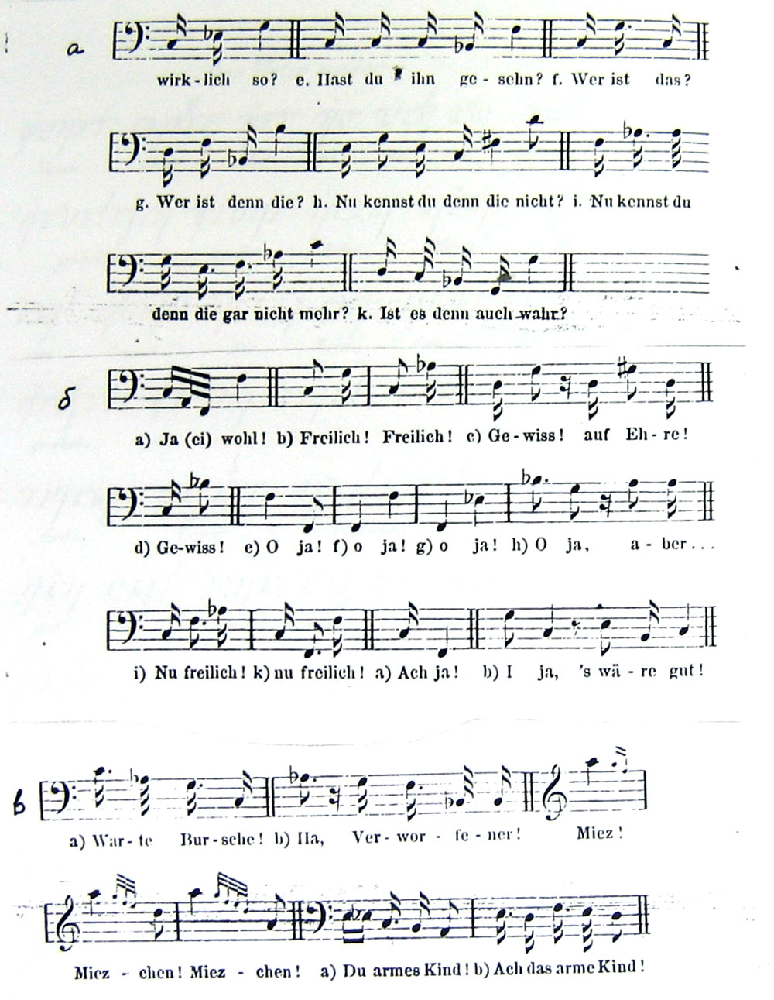

ИСТОРИЯ ФОНЕТИЧЕСКИХ ИССЛЕДОВАНИЙ
Рис.32. Обозначения мелодики у Меркеля: а – вопросы, б – ответы, в – выражения эмоций
Нажав сюда вы можете услышать как была воспроизведена эта мелодия по данным Меркелем нотам.
